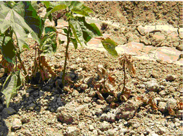

Photos of Early Season Cotton Diseases
Pima and upland ( Gossypium barbadense; G. hirsutum ) in Arizona

A soil inhabiting fungus that causes a vascular wilt disease

Meloidogyne incognita, infects cotton and many other plants

A soil borne fungus that enters the roots and grows into the vascular system of the plant

A soil borne fungus that is easily found in soils throughout the state but causes disease only when soils are relatively cold and wet
A soil borne fungus found throughout all cotton growing areas

Fusarium oxysporum f. sp. vasinfectum (or FOV) is a soilinhabiting fungus that causes a vascular wilt disease in susceptible cotton varieties.
It has been widely recognized in the San Joaquin Valley since the 1950s.
Historically, Fusarium wilt in cotton produced visible symptoms and caused economic damage only in susceptible varieties in combination with
significant populations of the root knot nematode (Meloidogyne incognita). Fusarium wilts usually seen in these prior recognized cases were
caused by race 1 or race 2 of FOV. In recent years, however, several localized occurrences of FOV infections with moderate to severe plant
damage have been confirmed in the absence of nematode populations.
In these cases, the disease was caused by race 4 FOV.
Evaluations in 2003 indicated that all widely-grown commercial Pima varieties tested were more seriously damaged than tested Acala or
non-Acala Upland varieties. Field trials also indicated good levels of resistance to race 4 FOV in some experimental Pima varieties.
It is significant, however, that many Upland/Acala varieties field-tested under high race 4 inoculum loads in 2003 were also infected,
albeit with fewer symptoms and less damage than in most Pima varieties.
The Root-knot nematode, Meloidogyne incognita, infects cotton and many other plants. This nematode is widespread in Arizona and is usually found in sandy or sandy loam soils. It is an obligate parasite that must complete its life cycle in a plant host, but eggs are persistent and can remain inactive in the absence of a host and/or in fallow fields for months or years. It is most active in the summer when soil temperatures are warm.
As M. incognita larvae enter the plant root, feed, and mature, the surrounding cells of the plant root increase in size and divide causing swellings (galls) on the roots.

In cotton, these swellings are usually small and often very inconspicuous. Plants may be heavily infected even though galls are not easily visible (see photo). Once cotton plants are infected, the flow of nutrients and water is restricted. Severely infected young plants are often stunted and chlorotic. Infected mature plants do not die, but yields are reduced.
Because of the wide host range of root-knot nematode, control is difficult. Sorghum, corn, melons, watermelon, peppers and beans, among many other crops, are all hosts and should not be rotated with cotton when M. incognita is a problem. Rotations to alfalfa and oats, which are not hosts, are effective, especially in multiple year rotations.
Preplant soil fumigation with 1,3 Dichloropropene is also effective in reducing early infections. Fields to be planted to cotton can be sampled in January and February and the soils assayed for presence of root-knot nematode. Currently assays are done at the Nematology Lab of the Department of Plant Pathology. Fumigation is recommended if greater than 0.5 juveniles/cc soil are detectable.
Verticillium wilt of cotton is caused by Verticillium dahliae, a soil borne fungus that enters the roots and grows into the vascular system of the plant. Symptoms of infection appear as necrotic areas on leaves (photo 1),

wilting (photo 2),
and usually discoloration of the vascular tissue (photo 3).

Symptoms usually appear in late August and September, and may be more pronounced in years when early season temperatures (May to early June) are lower than usual. Different strains of the fungus are found in Arizona, a non-defoliating strain that causes leaf lesions and vascular discoloration, and a defoliating strain that usually causes severe defoliation as well as vascular wilt. If plants wilt and die, foliar symptoms may be confused with those of cotton (Texas) root, but plants infected with Verticillium only have no rotten roots. Symptoms of Verticillium wilt of cotton are very similar to those of Fusarium wilt, but to date we have have no record of a positive identification of Fusarium wilt in cotton in Arizona.
V. dahliae survives in the soil for long periods of time as microsclerotia, tiny structures produced in the plant tissue. The varieties of both upland (G. hirsutum) and Pima cotton (Gossypium barbadense) planted in Arizona at this time are susceptible, but varieties differ in the intensity of infection and amount of defoliation. Rotation to alfalfa and grains may reduce the number of microsclerotia in the soil, but will not eliminate or possibly even reduce disease significantly. There are no chemical control measures available.
Seedling disease of cotton in Arizona is caused primarily by Rhizoctonia solani and to a lesser extent by Thielaviopsis basicola.
Thielaviopsis is a soil borne fungus that is easily found in soils throughout the state but causes disease only when soils are relatively cold and wet. It causes a dark colored root rot that also gives the disease the name "Black root rot" (see photo).
Seed treatments are recommended for fields with a history of disease.
Seedling disease of cotton in Arizona is caused primarily by Rhizoctonia solani and to a lesser extent by Thielaviopsis basicola.
Rhizoctonia is a soil borne fungus found throughout all cotton growing areas. It commonly causes post emergent damping-off or collapse of seedlings when plant growth is slowed by low soil temperatures, residual herbicide phytotoxicity, planting too deep, poor seed vigor or crusting. Infected seedlings may have sunken reddish colored lesions on the upper root (see photo), or roots may be soft and darkened with a noticeable constriction at the soil line.

Fungicide treatment of seed reduces disease, but the best prevention is planting into soils when temperatures are favorable for fast germination, using high quality seed. Fields with a history of severe disease should be rotated out of cotton.

{kind=link}
{kind=link}